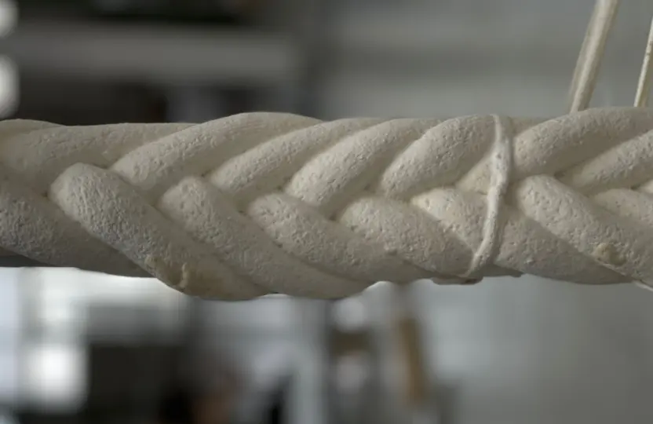
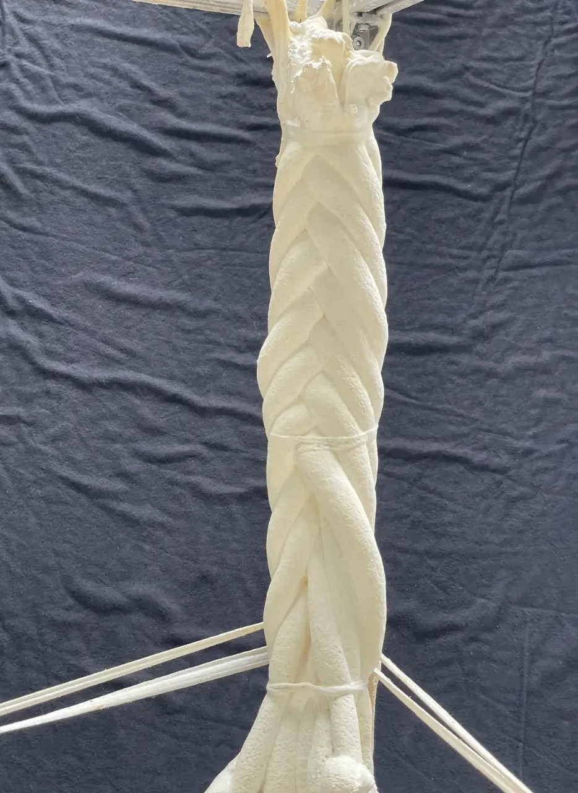
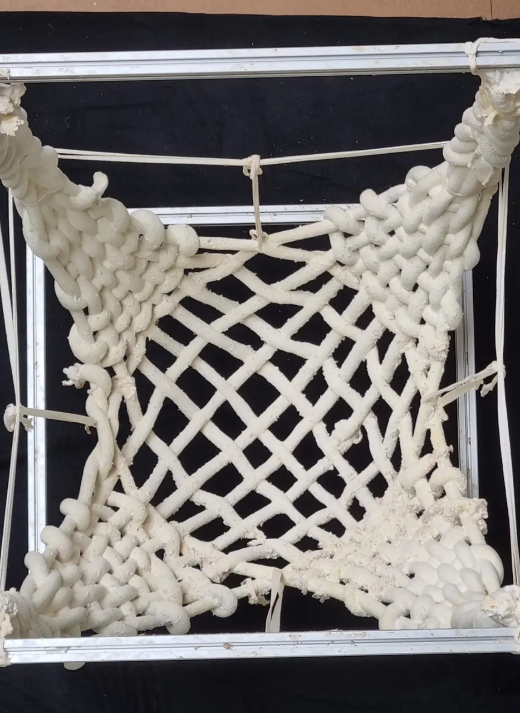
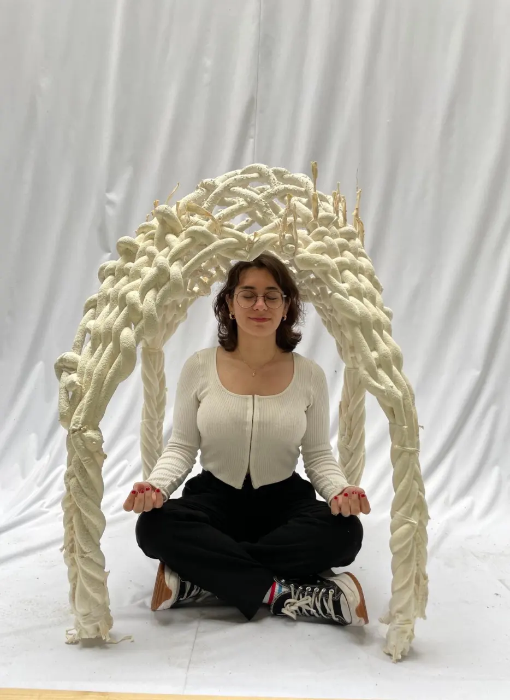
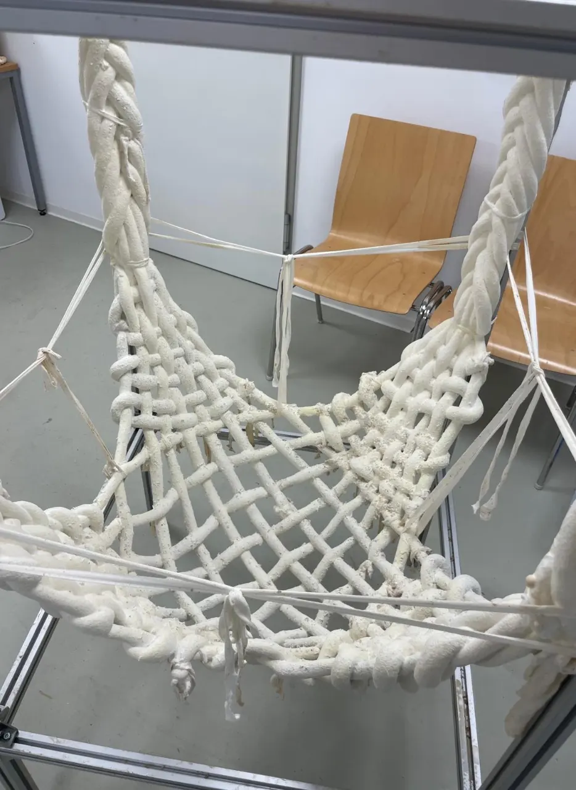
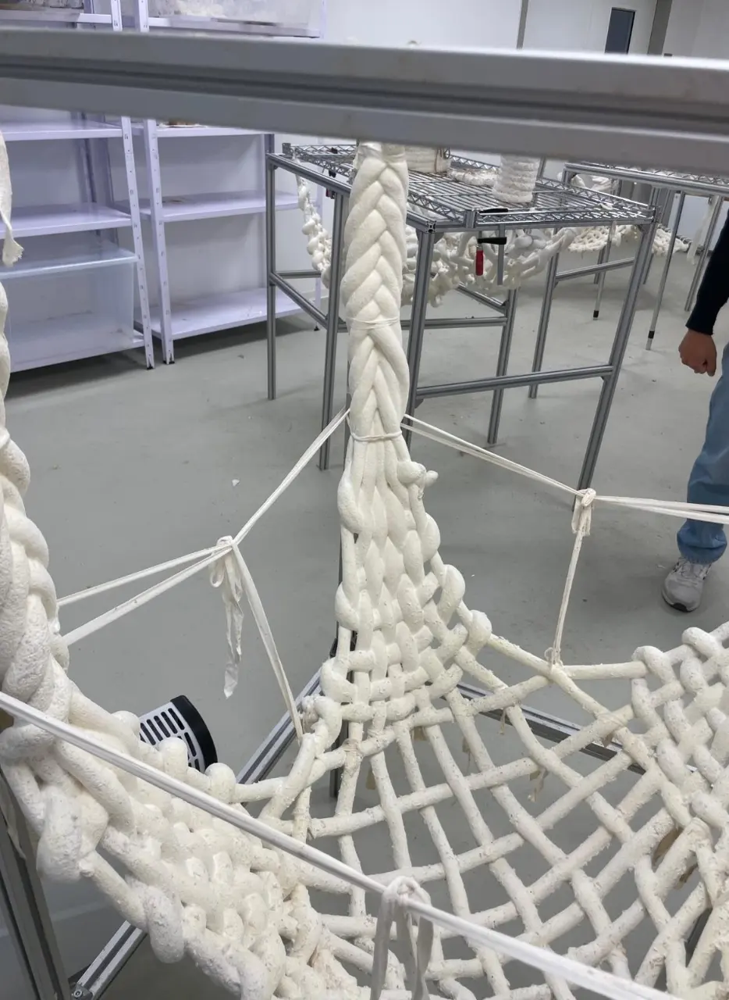
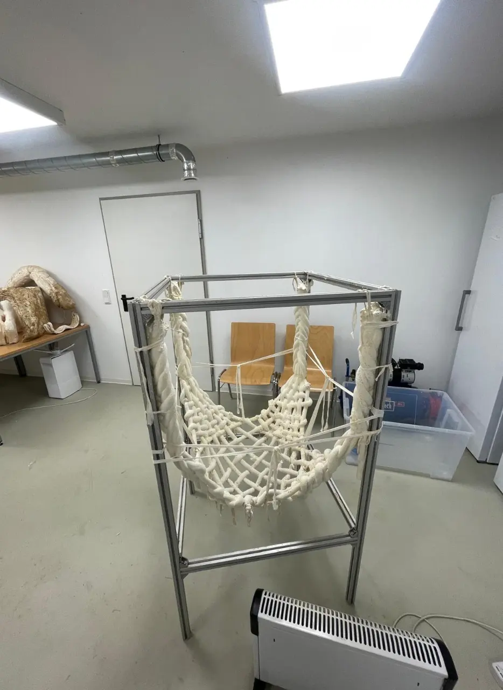
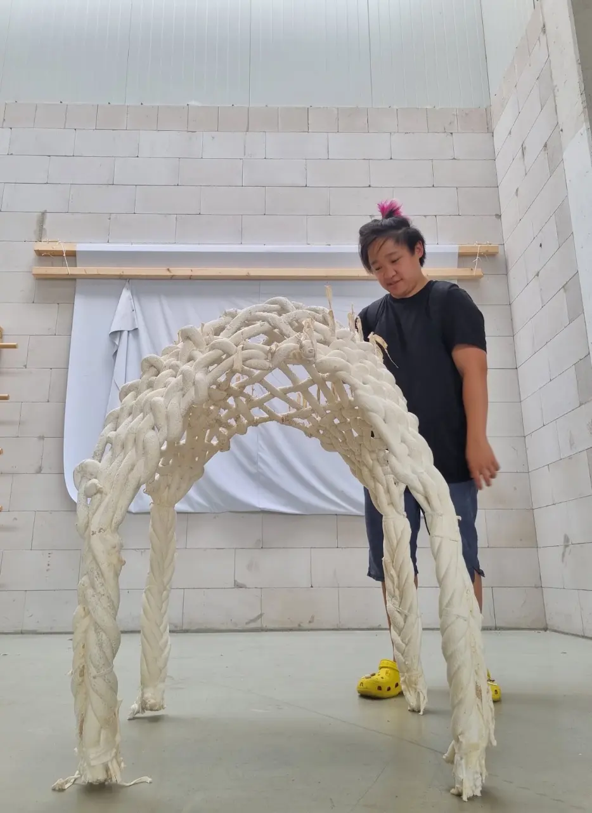

research
Mycelium Shell Structure

- context
- ITECH Seminar
- year
- 2024
- type
- research
This study into woven and braided textiles using a mycelium extruded fiber showcases the possibilities of mycelium in creating shell structures capable of withstanding compressive forces. Created by mixing mycelium with a growth medium and then extruding them into gauze to create single tubes, then weaving and braiding the tubes together. The braided structure, being extra sturdy was used as the legs while the lightweight woven section was used as the canopy.









